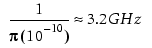

Parasitic extraction
Specifies the nets for which the switch time is different from the global switch time. Used only in Calibre xL and the Calibre xACT inductance extraction flow.
PEX INDUCTANCE [LAYOUTNAMES | SOURCENAMES] net_name
SWITCH TIME seconds
An optional keyword that specifies the net names are derived from the layout.
An optional keyword that specifies the net names are derived from the schematic. When specifying SOURCENAMES, ensure the SVRF rule file contains a valid Source Path statement and a valid Source Primary statement identifying the primary cell.
A required argument specifying the name of the net to be used for analysis.
A required argument that specifies the rise or fall time of the net. The format is a floating-point number in scientific notation. Use the shorter of the rise or fall time.
Specifies the nets for which the switch time is different from the global switch time specified with the PEX Inductance Switch Time statement. It instructs the Calibre xL tool to generate a broadband netlist for the specified net. You can specify multiple instances of this statement for different nets. For skin effect modeling, you can set the frequency up to 50 GHz (approximately 6.5 picoseconds). A broadband netlist is only generated for paths that are at least 100 microns long.
The following statement instructs the Calibre xL tool to use a switch_time of 100 picoseconds for net_1.
PEX INDUCTANCE SOURCENAMES net_1 SWITCH TIME 1.0e-10The following statement instructs the Calibre xL tool to generate a broadband netlist for capturing broadband behavior of impedance for net_1. To model effects at an intermediate frequency, a broadband netlist is generated using self impedance calculated at a low frequency (less than 100 MHz) and at a high frequency specified by:

PEX INDUCTANCE SOURCENAMES net_1 SWITCH TIME 1.0e-10